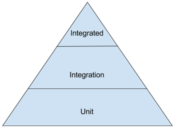
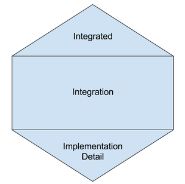

is unit testing dead?
Created by Alvaro / @kanekotic
what is unit testing?
In computer programming, unit testing is a software testing method by which individual units of source code, sets of one or more computer program modules together with associated control data, usage procedures, and operating procedures, are tested to determine whether they are fit for use.
how do we think unit testing looks like?

Help an alien get back home
Alien first concern is the cost of is call
0.03/minute, nevertheless if its his home has a discount of 0.2
Test Inputs
Brain power
test("if its home apply discount", () => { expect(cost(1000, true)).toBe(6)}); test("if its not home dont apply discount", () => { expect(cost(1000, false)).toBe(30)});Is this a good set of inputs?
export function cost(distance: number, isHome: boolean): number { return(isHome ? 6 : 30);}Fakers
test("if its home apply discount", () => { const distance = faker.random.number(1000); const result = distance * 0.03 * 0.2; expect(cost(distance, true)).toBe(result);}); test("if its not home dont apply discount", () => { const distance = faker.random.number(1000); const result = distance * 0.03; expect(cost(distance, false)).toBe(result);});Test Definitions
The classical
test("if its home apply discount", () => { const distance = faker.random.number(1000); const result = distance * 0.03 * 0.2; expect(cost(distance, true)).toBe(result);});The Describe/It pattern
describe("cost", () => { let result: number; let expected: number; beforeAll(() => { const distance = faker.random.number(); expected = distance * 0.03 * 0.2; result = cost(distance, true); }); it(`should apply discount`, () => { expect(result).toBe(expected); });});Alien second concern is how to call home
he will ask a friend because he does not have money
interface Extraterrestrial { callHome()} class Friends { constructor(alien: Extraterrestrial){ super() this.alien = alien } letPhone(){ this.alien.callHome() }}Mock & Stubs
Do it yourself
- simple stubs, complex spy or mock
- multiple implementations, no setup
describe("alien calls using friend", () => { it("works because someone answers", () => { class mockExtraterrestrialFail extends Extraterrestrial { callHome(){ } } const result = new Friend(new mockExtraterrestrialFail()) expect(result.letPhone()).toEqual() }); it("fails because nobody answers", () => { class mockExtraterrestrialFail extends Extraterrestrial { callHome(){ throw("nobody answering") } } const result = new Friend(new mockExtraterrestrialFail()) expect(result.letPhone()).toThrow("nobody answering") });});Mocking frameworks
- integrated spy, mocks and stubs
- easy to setup
- no implementation, multiple setups
describe("alien calls using friend", () => { let mockAlien: any; beforeAll(async () => { mockAlien = jest.fn(() => ({ callHome: jest.fn() }))(); }); it("works because someone answers", () => { const result = new Friend(mockAlien); expect(result.letPhone()).toEqual(undefined); }); it("fails because nobody answers", () => { mockAlien.callHome.mockImplementation(() => { throw "nobody answering"; }); const result = new Friend(mockAlien); try { result.letPhone() } catch (error) { expect(error).toEqual("nobody answering"); } });});Alien third concern is remembering his home phone
needs to find it in his phonebook
In memory databases
- no need to setup a real database
- multiple options depending language
- downside, you need to make sure query sintax is compatible
describe("in memory db", () => { let db: any; beforeAll(async () => { db = new sqlite3.Database(":memory:"); await new Promise((resolve, reject) => db.run("CREATE TABLE phones (name TEXT, phone TEXT)", () => resolve()) ); var stmt = db.prepare("INSERT INTO phones VALUES (?,?)"); stmt.run("Home","123456"); await new Promise((resolve, reject) => stmt.finalize(() => resolve())); }); afterAll(async () => { db.close(); }); it(`should return exisiting user`, async () => { await new Promise((resolve, reject) => db.each( "SELECT * FROM lorem where name = 'Home'", function(_: any, row: any) { expect(row.phone).toEqual("123456"); }, () => resolve() ) ); });});Docker
Testcontainers
describe("DAL", () => { let container let redisClient beforeAll( async () => { container = await new GenericContainer("redis","alpine") .withExposedPorts(6379) .start(); redisClient = redis.createClient(`redis://localhost:${container.getMappedPort(6379)}`); await redisClient.set("pepe", "is awesome"); }); afterAll( async () => { await redisClient.quit(); await container.stop(); }); it(`should return exisiting user`, async () => { const dal = new DAL() await dal.connect(`redis://localhost:${container.getMappedPort(6379)}`) const result = await dal.getUser("pepe") expect(result).toEqual("is awesome") });});Alien last concern is will the phone work
it needs to integrate with other systems
Mountebank
How testing will really look like?

Unit testing is dead, long live unit testing

is unit testing dead?
Created by Alvaro / @kanekotic